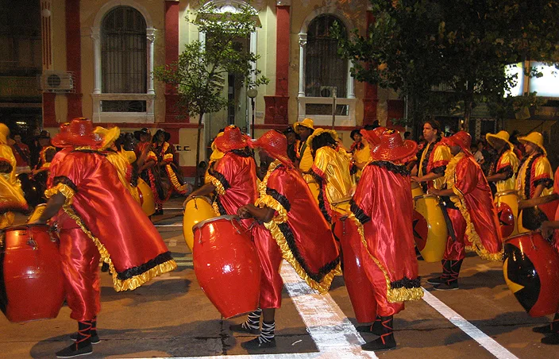

En las esquinas empedradas del Barrio Sur y de Palermo, los tamborileros encienden ramas y papeles viejos en el cordón de la vereda para templar el cuero crudo antes de salir a marchar. Una indagación sobre el candombe, la madera de duela, la lonja de vaca y la llamada de la memoria negra en Montevideo.
Quien camine por las calles empinadas del Barrio Sur o de Palermo en Montevideo durante las tardes de invierno, cuando el viento del Río de la Plata sopla cargado de una humedad marina que cala hasta los huesos y el sol se esconde temprano detrás de los viejos conventillos de Mediomundo y Ansina, sentirá muy pronto un olor inconfundible que no pertenece a la cocina doméstica ni a las chimeneas señoriales. Es el olor a madera de cajón quemada, a papel de periódico chamuscado y a cuero tibio que sube desde el cordón de la vereda. Allí, en la hendidura entre el granito del asfalto y el cordón de piedra, una decena de hombres de todas las edades rodean una pequeña fogata encendida con astillas secas, inclinando sobre las llamas los parches de sus tambores en un ritual silencioso que los montevideanos llaman templar la lonja.

Sin ese fuego previo, el candombe no puede existir. El parche del tambor afrouruguayo se elabora con lonja de cuero de vaca o de caballo sin curtir, raspada a mano con cuchilla para despojarla del pelo y secada al sereno. En el clima húmedo y frío del estuario platense, el cuero crudo absorbe la humedad del aire como una esponja biológica, destemplándose en una membrana fofa que al ser golpeada con la mano solo emite un rumor apagado y sin gracia. Pero cuando el tamborilero acerca la lonja al calor de las brasas vivas, frotándola con la palma de la mano con movimientos circulares y acariciando el borde de madera para que la dilatación sea uniforme, la piel del animal se tensa a nivel celular, recupera su rigidez cristalina y empieza a cantar con una voz seca, restallante y penetrante que cortará el aire de la noche.
La anatomía del tambor de candombe es en sí misma una lección de carpintería naval y reutilización de puerto. Los tres instrumentos fundamentales de la comparsa —el chico, el repique y el piano— no se fabrican vaciando un tronco de madera verde como en África, sino ensamblando duelas curvadas de pino tea o roble procedentes de los viejos barriles de vino, aceite y yerba mate que llegaban en los barcos al puerto de Montevideo. El luthier cepilla cada duela en ángulo diedro, las moja con agua hirviendo para doblarlas al fuego sobre un molde de hierro y las ciñe con aros de fleje de acero remachados a mano. El cuerpo resultante tiene la forma de un barril estilizado con el vientre abombado y la base abierta, una campana acústica que amplifica las frecuencias medias y graves con una sonoridad seca y profunda.
La cuerda de candombe funciona como un organismo polifónico de tres cabezas donde cada tambor cumple una función vital inseparable. El tambor chico es el más pequeño y agudo; su lonja delgada se templa muy alta y su ejecutante toca con una sola baqueta de madera dura y una mano limpia, marcando un patrón rítmico implacable de cuatro golpes por compás que nunca se altera. El chico es el reloj de la comparsa, el pulso cardíaco que no admite vacilaciones ni adornos; sobre su marcha disciplinada se sostiene todo el andamiaje sonoro.
En el extremo opuesto se encuentra el tambor piano, el gigante de boca ancha y lonja gruesa de buey que descansa pesado contra el muslo del tocador. El piano es la voz grave, el bajo telúrico que dialoga con los pasos de los bailarines y marca la síncopa profunda del baile. Y en el medio de ambos navega el repique, el tambor virtuoso y conversador que rompe el ritmo con improvisaciones endiabladas, redobles sobre el aro de madera y llamadas que dialogan con los otros tamborileros para avisar los cambios de marcha, las aceleraciones del compás o el saludo ritual ante otra comparsa que se cruza en la esquina.

Resulta imprescindible comprender la dimensión política de este toque callejero, que los afrouruguayos llaman con orgullo la llamada. Durante los siglos de la colonia y de la república oligárquica, las élites blancas de Montevideo intentaron por todos los medios erradicar el candombe de la vía pública, promulgando edictos que prohibían los toques de los negros libertos bajo acusación de escándalo moral, hechicería y perturbación del descanso vecinal. La respuesta de las comunidades afrodescendientes fue salir a tocar en grupo compacto por el centro de la calzada, marchando hombro con hombro con los tambores colgados de una correa de lona terciada al pecho, ocupando el espacio público con el volumen incontestable de sus lonjas.
Cuando cincuenta o sesenta tamborileros avanzan por la calle Carlos Gardel o por Isla de Flores, el suelo de la ciudad tiembla literalmente bajo las suelas de los zapatos. Las ventanas de vidrio vibran en sus marcos de madera, las paredes de los viejos edificios absorben el impacto sonoro y el transeúnte siente que el sonido no proviene del exterior, sino que brota de la tierra misma. No hay director de orquesta con batuta ni micrófonos amplificados: hay una inteligencia colectiva donde cada músico escucha el oído de su vecino y ajusta su fuerza para que la cuerda marche como una sola fiera que respira al unísono.
Hoy en día, las Llamadas de Carnaval han sido declaradas Patrimonio Cultural Inmaterial de la Humanidad por la Unesco y atraen a miles de turistas extranjeros con cámaras fotográficas de última generación. Pero el verdadero candombe sigue naciendo los domingos de invierno en el cordón de la vereda, alrededor de las cuatro ramas encendidas que calientan el cuero viejo de los tambores. En ese calor humilde que templa la lonja antes de salir a la calle, late la memoria viva de una comunidad que a través de dos siglos de racismo y olvido supo defender su derecho a la belleza, recordándole a la ciudad que la libertad es un tambor que no se apaga.
Fuentes.
- Andrews, George Reid (2010). Blackness in the White Nation: A History of Afro-Uruguay. University of North Carolina Press.
- Figari, Pedro (1930). El candombe y las tradiciones populares del Plata. Barreiro y Ramos.
- Rada, Rubén (2013). Memorias del candombe: De los conventillos a la música del mundo. Aguilar.
Investigación etnomusicológica sobre la cultura afrouruguaya y la luthería del tambor de candombe.
Fuentes consultadas el 19.11.2026. Análisis e interpretación: RUMMOR. Edición privada para revisión.